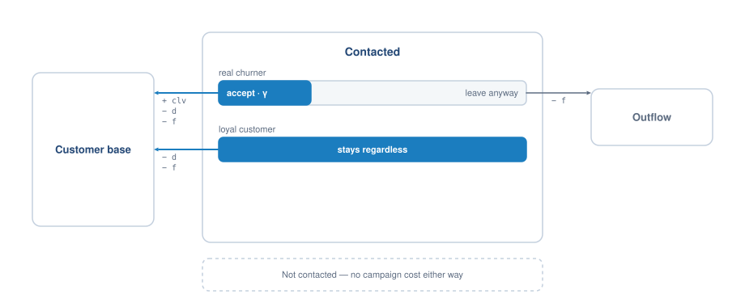
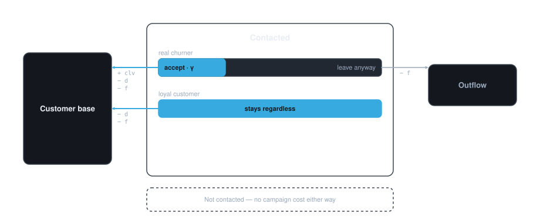

1.4. Worked cost matrices#
The cost matrix covers the builder API one method at a time. This page puts it to work on four complete problems, from the simplest possible matrix to one whose uncertainty cannot be written as a single distribution.
Each example ends with a callable metric. Pairing a matrix with a different
MetricStrategy changes what the number means, not how the matrix is
built — see Choosing a strategy.
1.4.1. A two-term matrix#
The smallest useful cost matrix has one cost per error and nothing on the diagonal. For a spam filter, a legitimate email sent to the spam folder is far worse than a spam message reaching the inbox:
from empulse.metrics import Cost, CostMatrix, Metric
spam_matrix = (
CostMatrix()
.add_fp_cost('lost_email')
.add_fn_cost('wasted_time')
.set_default(lost_email=5, wasted_time=1)
)
spam_cost = Metric(spam_matrix, Cost())
y_true = [0, 1, 0, 1, 0, 1, 0, 1]
y_proba = [0.1, 0.2, 0.3, 0.4, 0.5, 0.7, 0.8, 0.9]
print(spam_cost(y_true, y_proba))
Correct classifications are free here, so tp_benefit and tn_benefit stay at zero. Because
both defaults are set, the metric can be called with nothing but predictions — and either value can
still be overridden at call time to ask what happens if the filter’s mistakes get more expensive.
1.4.2. Maximum profit for customer churn#
The standard churn retention matrix is worth deriving in full, because it is the one every other churn metric in Empulse is a variation on.
A company contacts customers it believes will churn and offers them an incentive:
True positive — a real churner is contacted at cost \(f\) and offered an incentive costing \(d\). A proportion \(\gamma\) accept and stay, retaining their lifetime value \(CLV\); the remaining \(1 - \gamma\) leave anyway, and only the contact cost is spent. The benefit is \(\gamma (CLV - d - f) - (1 - \gamma) f\).
False positive — a loyal customer is contacted and happily accepts an incentive they did not need. Cost \(d + f\).
False negative — a churner is not contacted and leaves. No action, so no campaign cost.
True negative — a loyal customer is not contacted. No action, so no campaign cost.

Contacting a churner only pays off for the share that accepts; contacting a loyal customer never pays off.#

Contacting a churner only pays off for the share that accepts; contacting a loyal customer never pays off.#
Written with sympy symbols and named for readability:
import sympy
from empulse.metrics import MaxProfit
clv, d, f, gamma = sympy.symbols('clv d f gamma')
churn_matrix = (
CostMatrix()
.add_tp_benefit(gamma * (clv - d - f))
.add_tp_benefit((1 - gamma) * -f)
.add_fp_cost(d + f)
.alias({'incentive_cost': 'd', 'contact_cost': 'f', 'accept_rate': 'gamma'})
.set_default(incentive_cost=10, contact_cost=1, accept_rate=0.3)
)
mpc_score = Metric(churn_matrix, MaxProfit())
print(mpc_score(y_true, y_proba, clv=100))
That is the Maximum Profit measure for Customer Churn, and it is what
mpc_score is: a Metric built from exactly this
matrix, with these defaults.
1.4.3. Making a parameter uncertain#
\(\gamma\), the fraction of contacted churners who accept, is not something the company knows in advance. Treating it as a random variable rather than a point estimate turns the maximum profit measure into the expected maximum profit measure — and the only line that changes is the one defining \(\gamma\):
import sympy.stats
alpha, beta = sympy.symbols('alpha beta')
gamma_rv = sympy.stats.Beta('gamma', alpha, beta)
empc_matrix = (
CostMatrix()
.add_tp_benefit(gamma_rv * (clv - d - f))
.add_tp_benefit((1 - gamma_rv) * -f)
.add_fp_cost(d + f)
.alias({'incentive_cost': 'd', 'contact_cost': 'f'})
.set_default(incentive_cost=10, contact_cost=1, alpha=6, beta=14)
)
empc_score = Metric(empc_matrix, MaxProfit())
print(empc_score(y_true, y_proba, clv=100))
This is empc_score. Beta(6, 14) has a mean of 0.3, matching the point
estimate used above, but spreads probability either side of it.
The choice of distribution is yours. A uniform acceptance rate says you know nothing beyond the bounds:
uniform_matrix = (
CostMatrix()
.add_tp_benefit(sympy.stats.Uniform('gamma', 0, 1) * (clv - d - f))
.add_tp_benefit((1 - sympy.stats.Uniform('gamma', 0, 1)) * -f)
.add_fp_cost(d + f)
.alias({'incentive_cost': 'd', 'contact_cost': 'f'})
.set_default(incentive_cost=10, contact_cost=1)
)
print(Metric(uniform_matrix, MaxProfit())(y_true, y_proba, clv=100))
And the uncertain parameter need not be the acceptance rate. Making the lifetime value itself Gamma-distributed asks a different question — what is this campaign worth across a population whose values we only know in aggregate:
clv_rv = sympy.stats.Gamma('clv', alpha, beta)
clv_matrix = (
CostMatrix()
.add_tp_benefit(gamma * (clv_rv - d - f))
.add_tp_benefit((1 - gamma) * -f)
.add_fp_cost(d + f)
.alias({'incentive_cost': 'd', 'contact_cost': 'f', 'accept_rate': 'gamma'})
.set_default(incentive_cost=10, contact_cost=1, accept_rate=0.3)
)
print(Metric(clv_matrix, MaxProfit())(y_true, y_proba, alpha=6, beta=10))
1.4.4. Uncertainty that is not one distribution#
Some problems have a parameter whose distribution mixes point masses with a continuous piece, which
sympy.stats cannot express as a single random variable.
Credit scoring is the standard case. When a loan defaults, the fraction of it that is eventually
recovered is 0 with some probability (full recovery), 1 with some probability (total loss), and
otherwise spread over the interval between. MixtureMetric expresses this
as a weighted sum of ordinary metrics, one per piece:
from empulse.metrics import MixtureComponent, MixtureMetric
loss_rate, roi = sympy.symbols('loss_rate roi')
credit_matrix = CostMatrix().add_tp_benefit(loss_rate).add_fp_cost(roi)
point_mass = Metric(credit_matrix, MaxProfit())
loss_rate_rv = sympy.stats.Uniform('loss_rate', 0, 1)
continuous_matrix = CostMatrix().add_tp_benefit(loss_rate_rv).add_fp_cost(roi)
spread = Metric(continuous_matrix, MaxProfit())
empcs_score = MixtureMetric([
MixtureComponent('success_rate', point_mass, {'loss_rate': 0.0}),
MixtureComponent('default_rate', point_mass, {'loss_rate': 1.0}),
MixtureComponent(
lambda p: 1 - p['success_rate'] - p['default_rate'], spread, {}
),
])
print(empcs_score(y_true, y_proba, success_rate=0.55, default_rate=0.1, roi=0.2644))
Each component supplies a weight, a metric, and any parameter values fixed for that component. A weight can be a constant, the name of a parameter supplied at call time, or — as in the third component — a callable computing it from the others.
Note
Symbol names become keyword arguments, so they must be valid Python identifiers and must not be
Python keywords. The recovery fraction is conventionally written \(\lambda\), but a symbol
literally named lambda cannot be passed as a keyword argument; hence loss_rate above.
Use alias when the natural name is awkward.
This is how empcs_score is built. Working with metric objects explains why
combining metrics this way is exact rather than an approximation, and the one method where it needs
care.
1.4.5. Changing what the number means#
Every matrix above is independent of the strategy it is paired with. Keeping churn_matrix and
swapping the strategy answers a different question about the same campaign:
from empulse.metrics import Savings
expected_cost = Metric(churn_matrix, Cost())
expected_savings = Metric(churn_matrix, Savings())
print(expected_cost(y_true, y_proba, clv=100))
print(expected_savings(y_true, y_proba, clv=100))
Choosing a strategy covers what each strategy computes and when to reach for it.
1.4.6. Where next#
Choosing a strategy — the six strategies in detail.
Working with metric objects — what a metric object can do beyond returning a score.
Customer Churn Metrics, Customer Acquisition Metrics, Credit Scoring Metrics — the versions of these that ship ready to use.
Handing costs to an estimator — training a model on one of these.